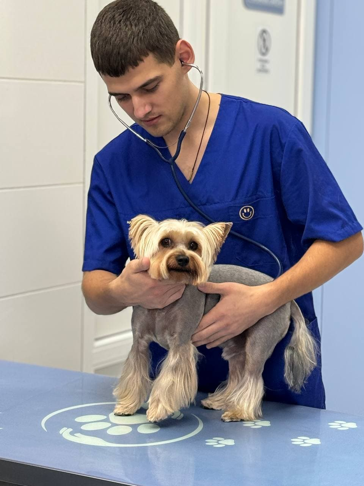
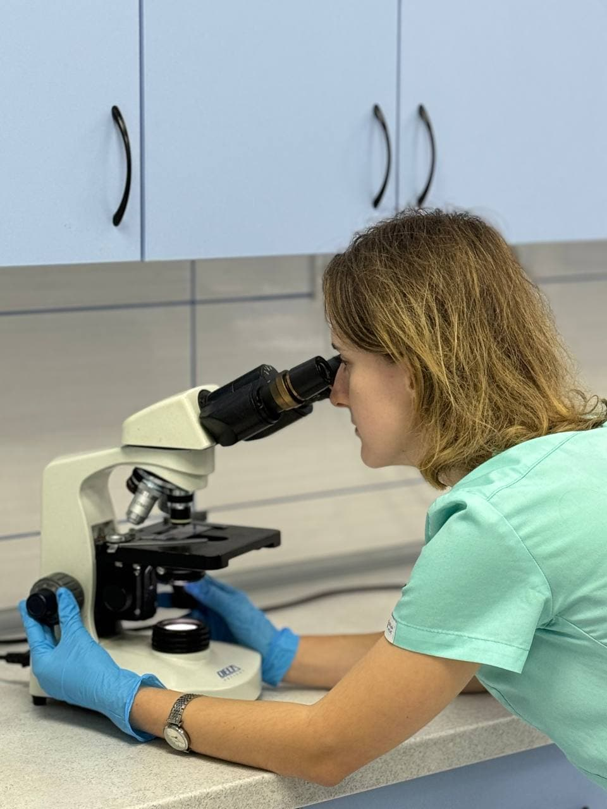
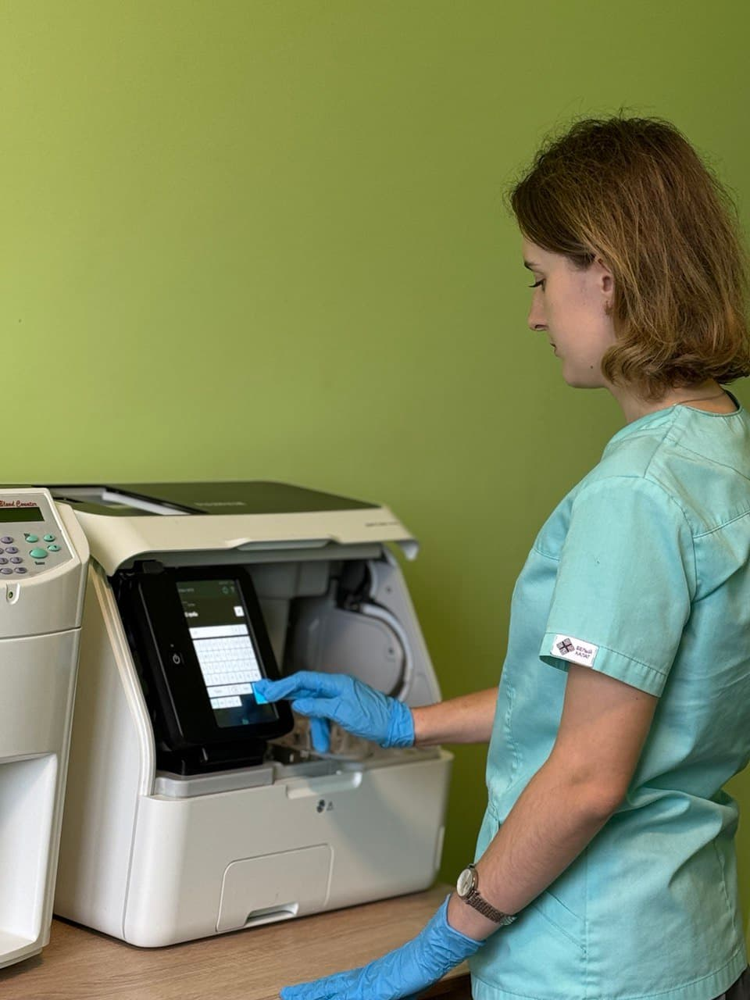

Мета нашої роботи –
здоров'я ваших улюбленців!
У клініці «Надійні Руки» ми завжди готові надати висококваліфіковану
допомогу та турботу для ваших тварин. Для цього ми маємо все
необхідне для того, щоб провести комплексне апаратне та лабораторне
обстеження вашого улюбленця в найкоротші терміни. Адже, чим раніше
поставлений діагноз, тим ефективнішим буде лікування. Наші лікарі –
це справжні експерти, які спеціалізуються на
всіх напрямках ветеринарної медицини.
У нашій клініці є стаціонар, де про вашого улюбленця опікуватимуться
професіонали.
Терапія у ветеринарній клініці — це комплекс медичних заходів,
спрямованих на діагностику, лікування, реабілітацію та профілактику
захворювань у тварин. Підхід до лікування враховує видову специфіку,
фізіологічні особливості, наявні патології та загальний стан
здоров’я тварини.
- 
-
Діагностика
Перший етап лікування — діагностика, яка допомагає визначити природу захворювання та його тяжкість. Ми використовуємо різні методи, щоб забезпечити точний діагноз:
• Фізичне обстеження: загальний огляд та оцінка стану органів через пальпацію, перкусію та аускультацію.
• Лабораторні дослідження: аналізи крові, сечі, калу та інші тести для виявлення інфекцій і порушень.
• Візуальна діагностика: рентген та ультразвук для отримання зображень внутрішніх органів.
• Спеціалізовані тести: цитологія, бакпосів і вірусологічні тести для точного виявлення патологій.→ Ці методи дозволяють нам швидко і точно встановити діагноз і почати ефективне лікування.
- 
-
Лікування
Після діагностики ми розробляємо індивідуальний план лікування для вашого улюбленця, який може включати:
• Медикаментозну терапію: застосування антибіотиків, протизапальних, анальгетиків, гормональних препаратів.
• Хірургічне втручання: при необхідності видалення пухлин, сторонніх предметів чи корекція дефектів.
• Інфузійну терапію: внутрішньовенне введення рідин для корекції водно-сольового балансу та лікування інтоксикації.→ Ми використовуємо найефективніші методи для швидкого відновлення вашого улюбленця.
- 
-
Профілактика
Профілактика спрямована на зменшення ризику захворювань та покращення якості життя тварин:
• Вакцинація: регулярні щеплення для захисту від інфекцій.
• Антипаразитарна обробка: препарати від ектопаразитів і ендопаразитів.
• Рекомендації щодо харчування та догляду: створення оптимальних умов для запобігання ожирінню та іншим проблемам.
• Періодичні обстеження: регулярний моніторинг здоров’я, особливо у старших тварин.→ Ці заходи допомагають забезпечити довге і здорове життя вашому улюбленцю.
-
-
Підхід до різних видів тварин
Терапевтичні методи у клініці варіюються залежно від виду тварини, оскільки кожен вид має свої фізіологічні особливості, що впливають на метаболізм ліків та потреби в догляді. Ми враховуємо ці фактори для забезпечення ефективного лікування. Наша мета — не тільки вилікувати тварину, а й покращити її якість життя, забезпечити комфорт та запобігти рецидивам захворювань.